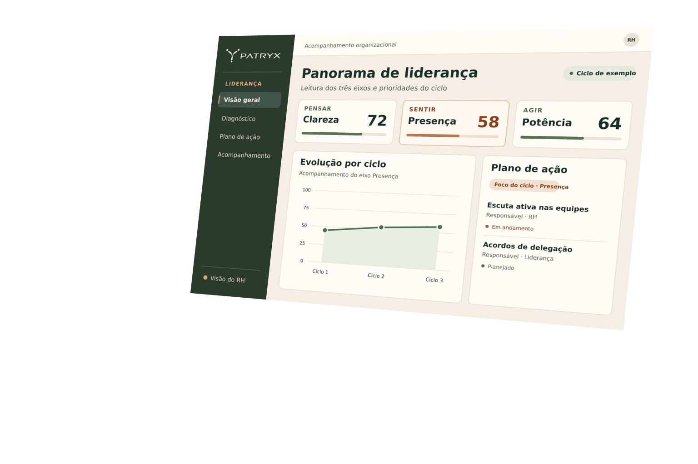

Clareza & Direção
A equipe sabe o que priorizar?
Consultoria de liderança
E é por ela que tudo começa.
A PATRYX combina diagnóstico, desenvolvimento de liderança e tecnologia própria para que o RH possa definir prioridades e acompanhar o que muda nas equipes.
Os desafios de quem lidera
Método C.P.P.
Do diagnóstico de NR-1 à evolução das equipes. Selecione uma etapa para ver como ela orienta o trabalho com o RH.
O diagnóstico de NR-1 mapeia riscos psicossociais e examina como o trabalho é organizado. Essa leitura ajuda o RH a definir as primeiras prioridades.
Para o próximo passoPrioridades para o plano de ação.
O que acompanhamos
O RH acompanha o que muda nas decisões, nas relações e na organização do trabalho.
A equipe sabe o que priorizar?
Quais decisões ainda dependem do líder?
Há espaço para discordar e pedir ajuda?

O volume de trabalho cabe na rotina?
O que entregamos
Relatório executivo assinado por psicóloga (CRP), indicadores comparáveis e prioridades registradas.
Devolutivas e ações para praticar escuta, decisão e delegação.
Registro das intervenções e acompanhamento dos indicadores.
Riscos psicossociais
Como a carga é distribuída? Que apoio as equipes recebem? Como a liderança lida com conflitos? O diagnóstico da PATRYX ajuda a equipe de RH a examinar essas condições de trabalho e definir prioridades de ação.
Entenda como a NR-1 se conecta à liderançaPlataforma PATRYX
Prioridades, responsáveis e próximos check-ins ficam reunidos no mesmo lugar. O RH acompanha o que foi combinado e compara as medições.
Acessar a área do cliente

Quem conduz
Fundadora da PATRYX e criadora do Método C.P.P., Patricia conduz o trabalho com RH e lideranças, da escuta inicial ao acompanhamento das ações.
Psicóloga · CRP 06/96792 · Especialista em psicotraumatologia
Check organizacional gratuito
O gestor responde a 12 perguntas em cerca de 5 minutos e recebe uma leitura inicial da liderança, com pontuação por eixo, semáforo de riscos e três pontos de atenção.